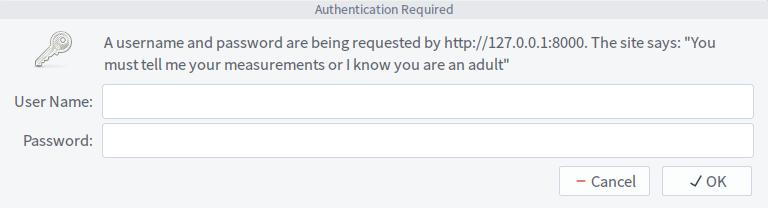

在Pyramid中实际上是提供了基础认证的,我们可以通过如下的方式进行导入:
from pyramid.authentication import BasicAuthAuthenticationPolicy而在Pyramid中,将安全系统拆分为认证和权限。这里我们来看下最简单的HTTP基础认证(BasicAuth Authentication)。
对于第1次使用Pyramid的人来说,会觉得这个框架很复杂,当然这话是相当于使用Django、Flask这样的开发人员来说的。
在Pyramid中,我们无法单独使用认证,其需要提供1个权限类一起使用,这里我们导入ACL这个权限控制类:
from pyramid.authorization import ACLAuthorizationPolicy下面我们来看下完整的代码:
from pyramid.authentication import BasicAuthAuthenticationPolicy
from pyramid.authorization import ACLAuthorizationPolicy
from pyramid.config import Configurator
from pyramid.httpexceptions import HTTPUnauthorized
from pyramid.view import view_config
from wsgiref.simple_server import make_server
@view_config(name='',renderer='json')
def index(request):
realm = 'You must tell me your measurements or I know you are an adult'
if not req.authenticated_userid:
return HTTPUnauthorized(headers=[('WWW-Authenticate', 'Basic realm="%s"' % realm)])
return {'data':'some data require authenticated.'}
def callback(username,pwd,req):
users = {
'zhangsan':'123456',
'lisi':'111111',
'wangwu':'888888'
}
passwd = users.get(username)
if passwd == pwd:
return True
return None通过这么近20行的代码,我们已经实现了1个简单的HTTP版本的基础认证。在这里,当认证不通过的时候,我们需要在响应头中返回WWW-Authenticate才会出现类似如下的界面:

然后接下来是配置的部分了:
config = Configurator()
basic_policy = BasicAuthAuthenticationPolicy(callback)
auth_polocy = ACLAuthorizationPolicy()
config.set_authentication_policy(basic_policy)
config.set_authorization_policy(auth_polocy)
config.scan()
app = config.make_wsgi_app()
server = make_server('127.0.0.1',8000,app)
server.serve_forever()在这里我们通过实例化Configurator生成1个配置对象。然后我们通过set_authentication_policy和set_authorization_policy方法分别设置认证策略和权限策略。
在Pyramid中,wsgi应用是通过配置对象的make_wsgi_app方法生成的。
需要注意的是,在这里,我们在BasicAuthAuthenticationPolicy类中传入了1个函数的名称,用于回调处理来判断其认证是否成功。如果是自定义认证类,我们是可以在失败的时候返回False的,对于系统内建的基础认证类,我们在回调时只能返回None。
上述的写法只是Pyramid中的1种方式,我们还可以通过其他的方式来实现相同的效果。虽然,第1次使用pyramid的时候,会觉得不怎么顺手,但是随着深入学习,你会发现Pyramid其实还是挺灵活的,只是相比Flask、Django这样的框架要写的代码会更多一些。
最后,在实例化BasicAuthAuthenticationPolicy类时,我们还可以传入参数debug来开启这个认证类的调试,其结果将记录到日志中。
参考文章: